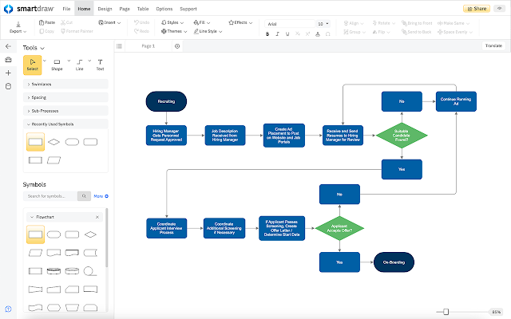
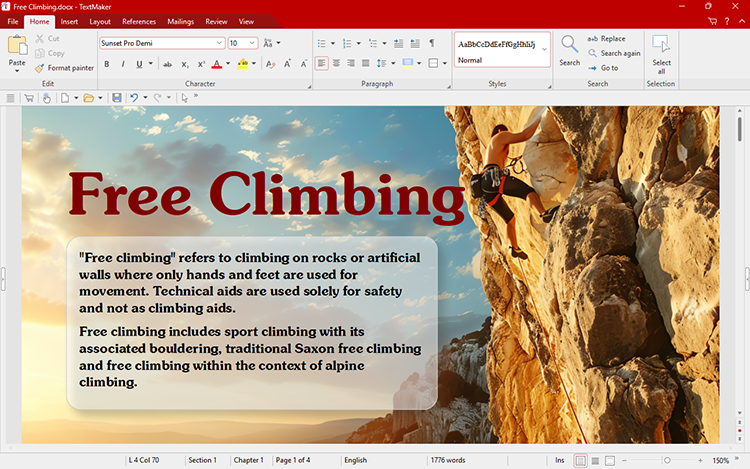

Tegu on vahenditega mis toetavad analüüsi ja projekteerimist.
Eelkõige mõeldud analüüsi ja projekteeringute visualiseerimiseks. Upper-CASE-vahenditega teostatakse järgnevaid tegevusi:
| SmartDraw |
|---|
 |
|
| Freeoffice TextMaker |
|---|
 |
|
Viited infole: CASE-vahendid